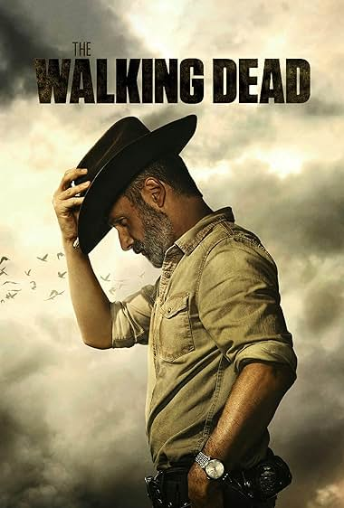

Streming Now
-

6.8/10
 Colter Shaw travels the country in his old-school RV, helping
police and private citizens solve crimes and locate missing
persons--until his latest case changes everything.
Colter Shaw travels the country in his old-school RV, helping
police and private citizens solve crimes and locate missing
persons--until his latest case changes everything.
-
7.8/10
Anthology series in which police investigations unearth the personal and professional secrets of those involved, both within and outside the law.
-
8.3/10
A young boy known as the Avatar must master the four elemental
powers to save the world, and fight against an enemy bent on
stopping him.
Most popular
-
9.0/10
When a mysterious European ship is found marooned in a nearby
fishing village, Lord Yoshii Toranaga discovers secrets that could
tip the scales of power and devastate his enemies.
-
7.7/10
Starting over isn't easy, especially for John Nolan who, after a
life-altering incident, is pursuing his dream of joining the LAPD.
As their oldest rookie, he's met with skepticism from those who see
him as just a walking midlife crisis.
-
8.4/10
In April 1986, the city of Chernobyl in the Soviet Union suffers
one of the worst nuclear disasters in the history of mankind.
Consequently, many heroes put their lives on the line in the
following days, weeks and months.
Best Of All Time
-

9.0/10
Sheriff Deputy Rick Grimes wakes up from a coma to learn the world
is in ruins and must lead a group of survivors to stay alive.
-

9.3/10
A chemistry teacher diagnosed with inoperable lung cancer turns to
manufacturing and selling methamphetamine with a former student in
order to secure his family's future.
-
9.8/10
A documentary series on the wildlife found on Earth. Each episode
covers a different habitat: deserts, mountains, deep oceans, shallow
seas, forests, caves, polar regions, fresh water, plains and
jungles. Narrated by David Attenborough.
-